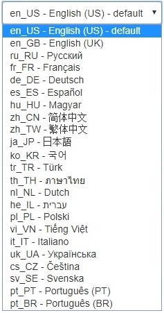

Edit asset |
  
|
Edit asset |
|
The information on this page is useful for both Editing an Integration and Editing a Cloud portal. It covers what certain buttons do, different types of fields, and the various language options.
Click on a page name to enter changes for that page. When you click in an editable field, the field outline will change to blue.
•Required fields are indicated with an asterisk (*).
•Advanced fields are shown in red. The contents in these fields is provided by Network Optix.
•Non-editable fields have a grey background block.
•The database label (e.g. %SUPPORT_LINK%), field content (e.g. "App ID for iOS mobile application"), and any limits (ex. required file type, maximum number of characters) are shown for each field. You can use a Cloud Portal database label as a variable in any other field.
•Click on Link to Page to view the current (published) version of a page.
Saving Page Changes
Once changes are entered you have several options:
– saves a draft of pages changes before publishing so you can return to work in progress and generates a preview page. You will see the message "Changes have been saved. Preview has been created."
– click at the bottom of the page to view the updated page in a new browser tab.
– submit pages for review.
– undoes changes made since the last time the page was saved.
 Edits to the portal can be previewed in draft format at any time without affecting live pages.
Edits to the portal can be previewed in draft format at any time without affecting live pages.
Certain page fields are also HTML editors and therefore allow for text formatting and the use of hyperlinks. Click on the Edit HTML source icon () to open an editor that displays HTML code. You can also paste formatted Word content into these fields intact using the Paste from Word icon.
Some pages have a language selection option. Selecting a language for a given page only changes a predefined set of Cloud Portal interface elements, such as the log in dialog, revision notice emails, or the shortcut tabs at the bottom of the landing page. This setting does not translate the contents of all fields on a page. For the entire page to be in a given language, the content of user-editable fields must be entered in that language.
It is important to note that a separate template is saved for each language option you select. Each template must be saved, edited, and reviewed independently.
Additional language support for the Cloud Portal is part of your customization agreement with Network Optix. Though you may see many translation options when editing page content, only certain language options will be available according to your customization contract. "Default" in the language pull-down menu indicates the default language for the customization you are viewing.
